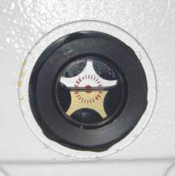

Visual inspection of the Turning Unit, intermediate.
- 2
- Boarder Guard Maintenance
- Basic
- 20
-
Note 
- Check the oil level - ensure that the oil has settled.
- Behind the encoder cover an inspection glass for oil level is accessible
-
When the oil covers the lower half of the inspection glass,
the right level is obtained, see Figure
1
Figure 1. Oil level 